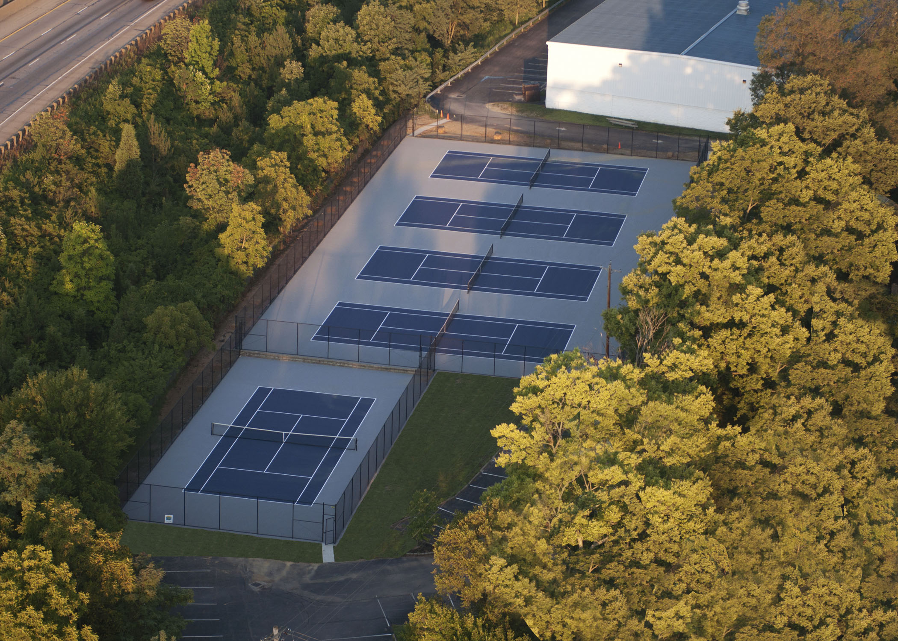

Bringing Sportsmanship to Life
As part of its promise to offer every student the opportunity to grow physically and practice good sportsmanship, The Summit provides student athletes with a full range of facilities and playing fields. The breadth of these resources allows us to offer students a three-season athletic schedule that fields 42 teams grades seven through twelve, and gives students multiple opportunities to develop their skills. Regular renovations and improvements to our fields and facilities speak not only to our commitment to athletics, but also to the significant role that sports play in nurturing a sense of school spirit. Our facilities are located on our Main Campus, 2161 Grandin Road, Cincinnati, OH 45208, and at our Athletic Complex, conveniently located off the Red Bank Road exit on Interstate 71 at 5580 Ehrling Road, Cincinnati, OH 45227.
Main Campus
Location: 2161 Grandin Road, Cincinnati OH
Directions: Get driving directions from your location from this link at mapquest.com.
Williams Field
Located on the main campus in front of the school, Williams Field is used for soccer, football, lacrosse and field hockey games.
Williams Field is an attractive, lighted field with plentiful parking. The field is equipped with state-of-the-art, all-weather Motz 24/7 synthetic turf; allowing for better drainage and maintenance, and providing a superb playing surface.
The stadium seats more than 900 fans, with prime views from every seat. Features include locker rooms, restrooms, coaches rooms, offices, a concession area, press box and plaza.
Thurner Field
Located on the main campus in front of Flannery Gym, Thurner Field is a multipurpose practice field with Motz 24/7 synthetic turf.
Lower/Middle School Field
2161 Grandin Rd. Cincinnati, Ohio
Located behind the Lower School, this field is used as a practice field for K-6 and Middle School sports. The surface of this field is also Motz 24/7 synthetic turf.
Gyms: The Summit has three gymnasiums on campus. Upper School teams play games in Flannery Gym. Middle School teams play their home games in Holmes Gym. K-6 teams play in the Lower School gymnasium.
Weight Room: Located in Flannery Gym, the updated Weight Room provides what athletes need to condition and strengthen for better results on the field. It includes a wide range of Hammer Strength equipment.
Athletics Complex
Location: 5580 Ehrling Road, Cincinnati, OH
Directions: Take I-71 to Red Bank Rd. exit. At light turn right onto Duck Creek. Turn right at the first street which is Old Red Bank. Go under the overpass and turn left onto Ehrling Road. Get driving directions from your location from this link at mapquest.com.
The Athletic Complex is a 16-acre site which includes:
- A state-of-the-art baseball field.
- Five tennis courts.
- A natural turf softball field.
- Two natural turf fields used by all levels of Summit teams for soccer, field hockey and lacrosse.
- The Athletic Complex Building.
Baseball Field
The Motz Group of Newtown, Ohio, installed the Triple Play™ HP synthetic turf baseball system, making The Summit’s field a first-of-its kind model for baseball fields. The entire infield is covered with this improved high-performance artificial grass and advanced underlayment system. Among the benefits are a truer bounce of the ball and speeds close to the experience of a high performance natural turf field, cooler surface temperatures, and elimination of rain-outs due to poor field conditions.

Tennis Courts
Five tennis courts were reconstructed in 2011 with proper sloping and drainage. Painted Summit’s blue and gray, these courts include wind screens.
Athletic Complex Building
The Athletic Complex building contains two gyms used for basketball and volleyball practice as well as K-6 recreational games. It is the home site of the Summit Wrestling team. It also houses an indoor batting cage.